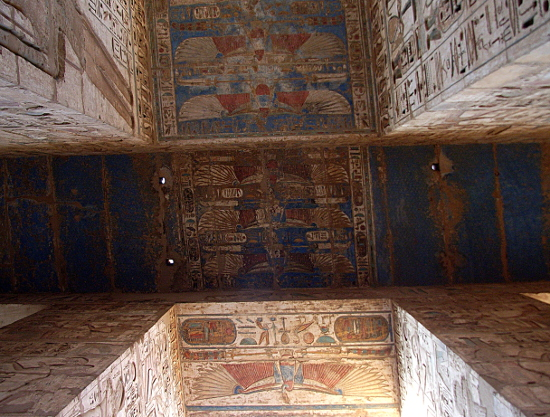
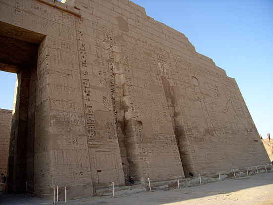
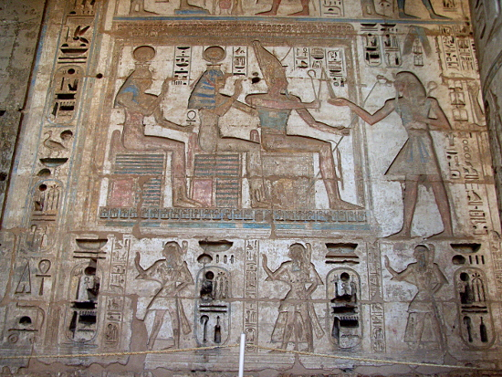
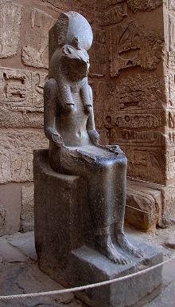
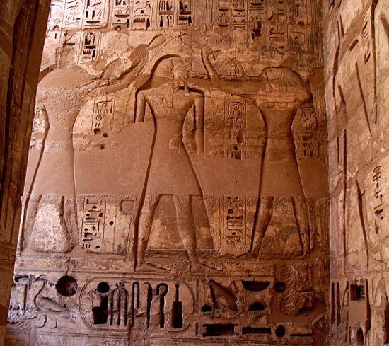
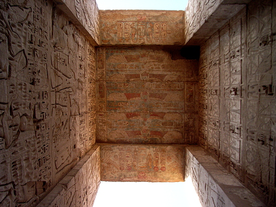
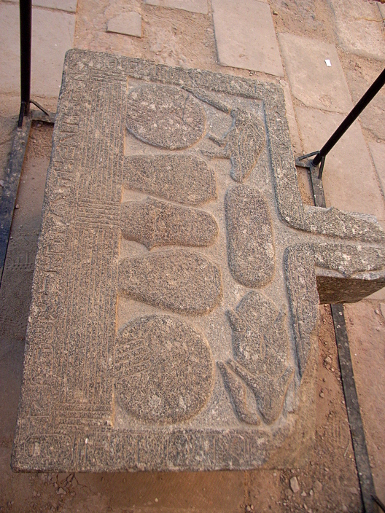

Egypt Trav-E-Log ©
Medinet Habu Temple
18 Nov 2010, Luxor, Egypt
-------------------------------------------
Medinet Habu temple, c. 1150 BCE, is the third location visited today, just 3 km south of the Deir el-Bahri Temples. This mortuary temple of Ramesses III has also seen heavy restoration, which makes visualization of it's appearance in antiquity easier to understand. Restoration is done so their is no question as to what is original, and what is fill between original pieces. It is certainly a lot easier to take a photo of a restored standing structure, than a pile of seemingly random blocks covered with script and drawings.
-------------------------------------------
Looking straight up at ceiling between two arches. The colors from 3150 years ago! |
 |
| First Pylon of the Mortuary Temple of Ramesses III, Medinet Habu |
 |
Royalty rules.
|
 |
Anointing the Pharaoh, right.Unmarked statue, below. |
 |
| Archway at the Mortuary Temple of Ramesses III, Medinet Habu |
 |
| Collection stone for liquids is my description. Was this used in sacrifices? |
 |
Question? Contact me at the Juno.com address Dancer2SEAsia.
Life is Good When You Travel! Start planning your next trip!